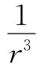
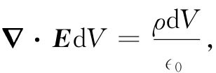
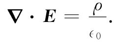

我们的优美结果——式（4.32），是为单个点电荷而证明的。现在，假设存在两个电荷，电荷q1 位于一点，而电荷q2 位于另一点，问题看来比较困难。为了求得通量，我们要对电场的法向分量取积分，而这电场是由两个电荷产生。这就是说，如果E1 代表由q1 单独产生的电场，而E2 代表由q2 单独产生的电场，则总电场为E=E1 +E2 。通过任一闭合曲面S的通量为
∫S （E1n +E2n ）da=∫S E1n da+∫S E2n da. （4.33）
两个电荷存在时的通量，等于单个电荷的通量加上另一个电荷的通量。如果两个电荷都在S面之外，则通过S面的通量为零。如果q1 在S面内而q2 在S面外，则第一个积分为q1 /∈0 ，而第二个积分为零。如果两电荷都包围在曲面内，则每一电荷都将做出自己的贡献，因而通量为（q1 +q2 ）/∈0 。普遍的法则显然是，从一个闭合曲面出来的总通量等于在该曲面内 的总电荷除以∈0 。
我们的结果是静电场一条重要而普遍定律，称为高斯定律。
高斯定律 ：
如果我们用电荷密度ρ来描述电荷的位置，则可认为每个无限小体积dV内含有“点”电荷ρdV。这样，对所有电荷的和，就是积分
Q内 =∫S内体积 ρdV. （4.37）
从上述的推导可以看出，高斯定律乃起因于库仑力中的幂指数精确地等于2这个事实。 或任何n≠2的1/rn 的场，不可能给出高斯定律。因此，高斯定律只不过是用一种不同形式来表述两电荷间力的库仑定律而已。事实上，如果倒过来，你将会从高斯定律导出库仑定律。这两定律完全等价，只要我们记住电荷之间的作用力是径向的。
现在，我们想用微商来写出高斯定律。为此，把高斯定律应用于一个无限小的立方体表面。在第3章中，我们曾经证明过，从这样一个立方体表面出来的E的通量仍等于▽·E乘以该立方的体积dV。按照ρ的定义，在dV内的电荷等于ρdV，所以高斯定律给出

或
 （4.38）
高斯定律的这个微分形式，是静电学的四个基本场方程式中的第一个，即式（4.5）。现在我们已经证明，静电学的两个方程式（4.5）和（4.6）与库仑定律等价。下面将要讨论应用高斯定律的一个例子（以后我们将碰到更多的例子）。